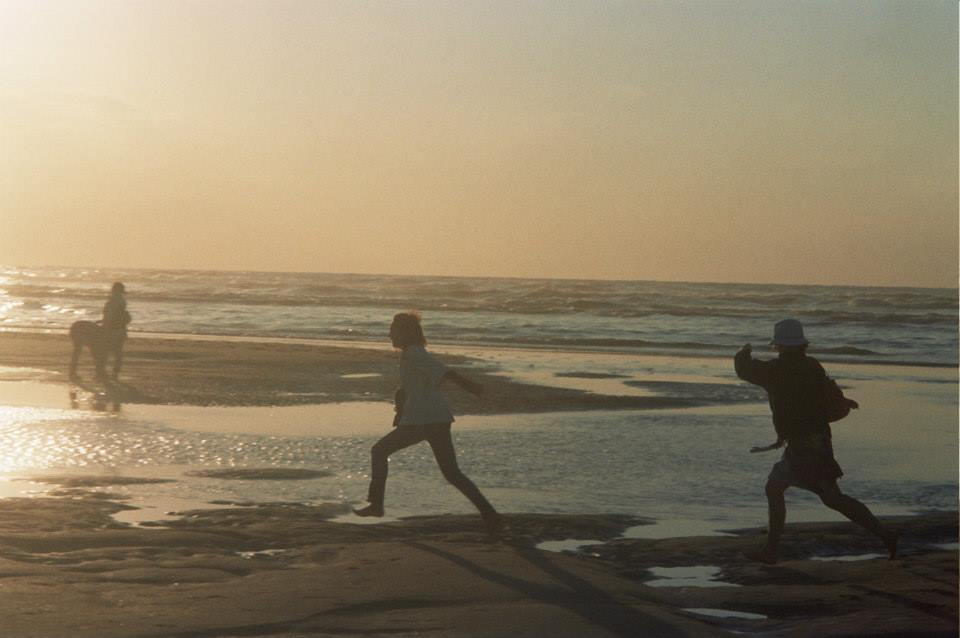

Splash
August 25, 2025
If it had been for fun, the little girl would have said "plouf, plouf, plouf". But I could only hear the hard "splash, splash, splash". No more game – not now. Instead, a state of emergency. Irritating drops of rain were sliding on my skin. They felt like an acid attack was suddenly assaulting me. How could I escape? As the wheel burst through each puddle, one by one, scattered reflections of my face shimmered in their rainbow sheen. Their colorful hues might have offered hope – and yet I could not recognize myself in any of them. My body was dissolving rapidly and I could not stop it. As a last attempt, I clenched my muscles, ground my teeth tight together, and shut my eyes. Now pearls of sweat flooded my face. Then, I heard a final "splash" – that of a half-dead cyclist collapsing.
· · ·
Context & Notes
A prose poem finding its origins when realizing the difference between two onomatopoeia - the French "plouf" carrying a comical, playful touch and the English hard "splash", both used when someone falls in the water.
Comments
If this poem stirred something in you, share a thought below.